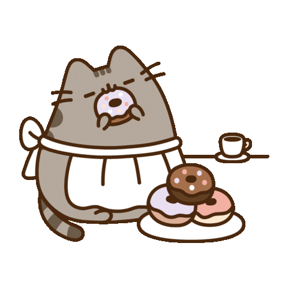
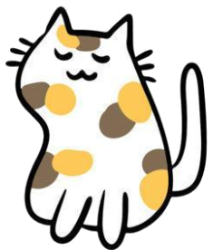

Music Theory Tool
Key Signature Builder
Current signature
0 accidentals
Parallel
Parallel of C Major → C Minor
Parallel of A Minor → A Major
Enharmonic
Major Key: C Major
Minor Key: A Minor
Guide Mode
Off
On
Reset
Clef
Grand Staff
Alto
Tenor
1
2
3
Relative Minor:
↓ 3 Half Steps
C Major ↓ 3 = A Minor
Tap to pause
Blank staff for building a key signature
Treble and bass clef staves where key signature sharps or flats appear in order as the buttons are pressed.

-
Flat
♭
+
-
Sharp
#
+